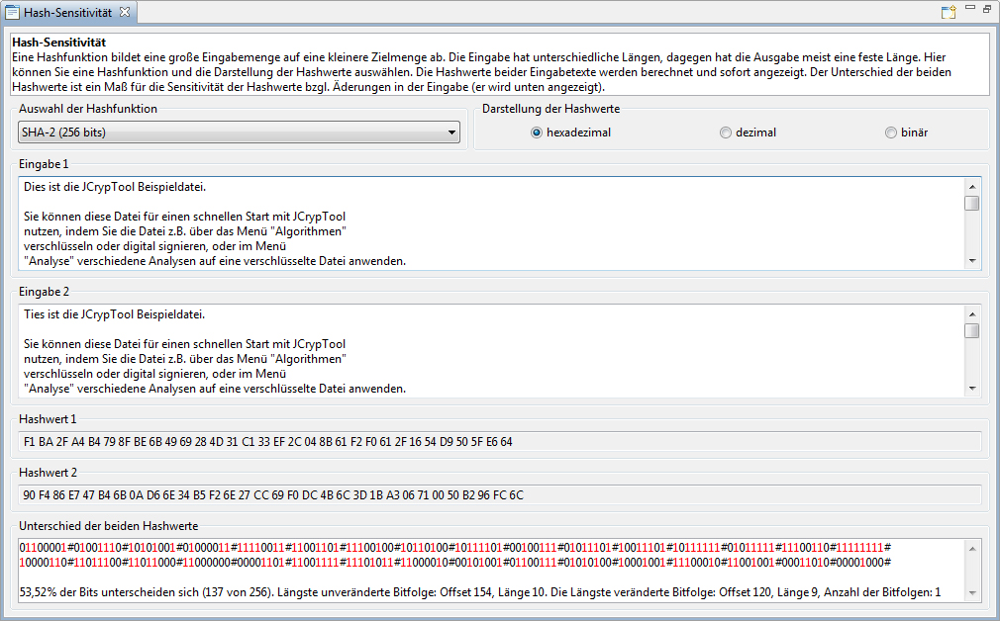
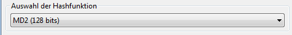
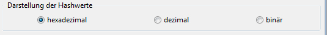
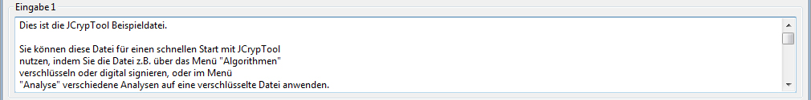
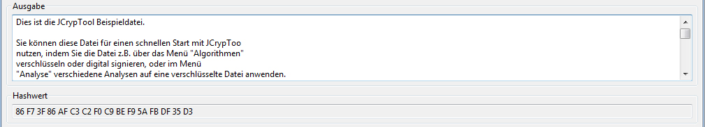
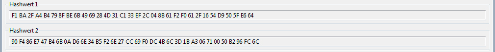
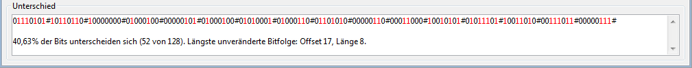
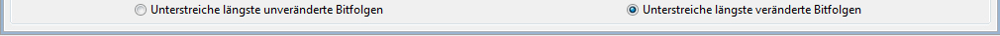

Diese Onlinehilfe erklärt die Funktionsweise des Plug-ins Hash-Sensitivität.
Das Plug-in lässt sich über das Menü Visualisierungen oder über den Krypto-Explorer im Tab Visualisierungen starten.

Das Plug-in besteht aus einem Beschreibungsfeld und vier Grundbereichen: Hashfunktion, Eingabetext 1, Eingabetext 2 und Unterschied.
In dem Beschreibungsfeld wird die Erklärungen über den Algorithmus angezeigt.
In der Hashfunktions-Bereich kann man eine Hashfunktion und dessen Darstellung auswählen.

Folgende Hashfunktionen sind verfügbar:
Die Hashfunktion kann als hexadezimal, dezimal oder binär dargestellt werden.

Man kann in dem Eingabetext 1 Feld einen beliebigen Text eingeben.

Das Gleiche gilt für für den Eingabetext 2.

Die Hashwerte für den Eingabetext 1 und 2 werden berechnet und unten in der ausgewählen Darstellung angezeigt.

Basierend auf der Eingabe des Eingabetext 1 und 2 wird der Unterschied der Bits im Hashwert unten angezeigt und in der Farbe rot hervorgehoben.

Es werden außerdem einige Statistiken angezeigt.
Man kann zu jeder Zeit die Hashfunktion und die Darstellung ändern. Der Hashwert des Eingabetext 1 und 2 wird dynamisch berechnet und der Unterschied der Bits des Hashwertes im Berech Unterschied angezeigt.
Wenn man auf den Button Unterstreiche längste unveränderte Bitfolgen klickt, werden die längste unveränderte Bitfolgen unterschrichen. Das gleiche gilt für den Button Unterstreiche längste veränderte Bitfolgen.

Wenn man auf das Restart-Icon in der Menüleiste klickt, wird der Standardtext in den Einabetext 1 und 2 geladen.
Quellen